安静地写，
长久地留。
MarKing 是一款本地优先的桌面 Markdown 编辑器。实时预览、公式图表、双链笔记、AI 辅助与专业导出一应俱全——而你的文字，始终是硬盘上的纯文本文件。
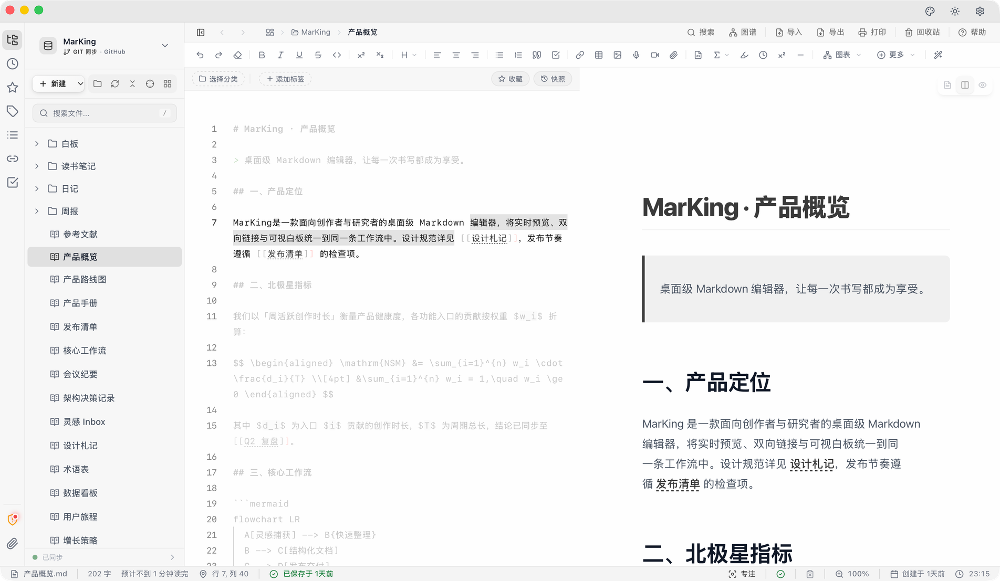
纯文本，不锁定
笔记就是硬盘上的 .md 文件，任何编辑器都能打开，没有私有格式。
零追踪
不收集遥测、行为数据与个人信息；没有广告，无需注册。
原生性能
原生编译，冷启动不到 2 秒，十万字长文依旧顺滑。
全平台
Windows、macOS（Apple 芯片与 Intel）与 Linux，同一套体验。
01写作
专注于下一句话。
实时分栏预览、打字机滚动、段落聚焦与三级沉浸模式——界面在你需要时出现，在你落笔时退场。
演示：在左侧书写 Markdown，右侧即时呈现排版结果。
分栏实时预览
编辑、分栏、预览三种布局随时切换；滚动同步，长文也不跳动。
专注与沉浸
CtrlShiftEnter打字机滚动与段落聚焦；三级沉浸模式，一键只留文字。
命令面板
CtrlShiftP所有操作，键盘可达；快速切换器毫秒级跳转文档。
智能补全
Tab70+ 代码片段，LaTeX 命令与代码块语言即时提示。
快速捕获
CtrlAltM系统级热键唤起迷你浮窗，灵感直接存入 Inbox。
轻量模式
双击任意 .md 文件即刻打开，极低资源占用，读完即走。
02表达
公式、图表与白板，写进同一篇文档。
技术写作需要的不只是文字。可视化公式、Mermaid 图表、手绘白板与表格编辑都内置在编辑器里，不必在工具之间来回切换。
公式
MathLive 可视化编辑，配合虚拟键盘输入；\label 与 \eqref 自动编号，点击即可跳转。
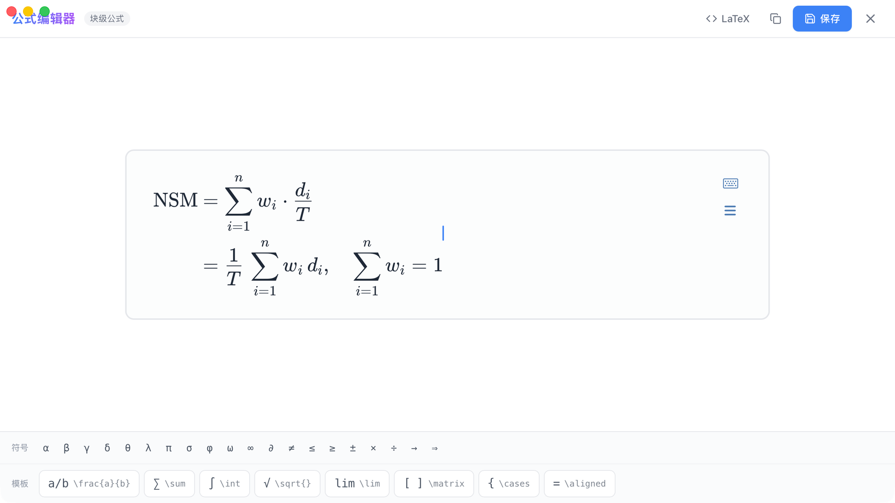
图表
完整支持 Mermaid 11，新增架构图、时间线、桑基图、C4 等 8 种图表。
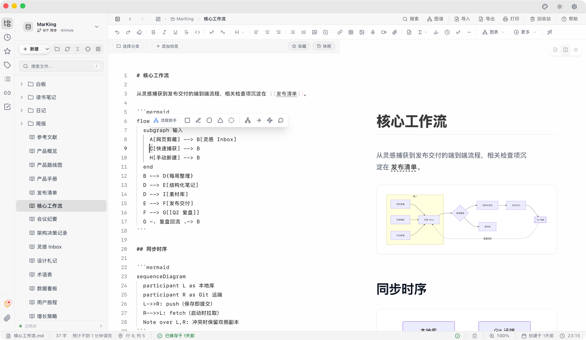
表格
像电子表格一样编辑 Markdown 表格，单元格可换行，保存时保留原有格式。
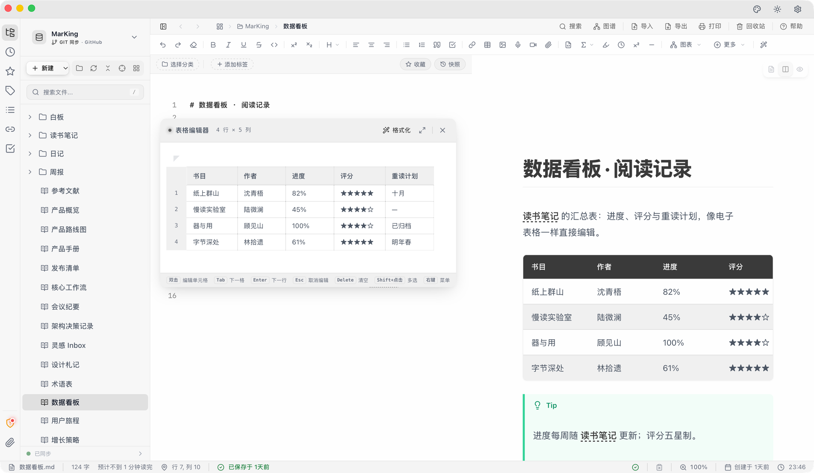
白板
内嵌 Excalidraw 手绘白板，流程与架构草图随手画进文档。
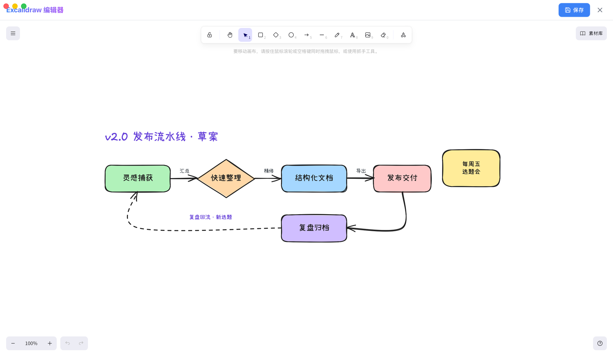
同样内置 — Callout 提示框 · 脚注 · 任务列表 · 代码高亮主题 · 上下标 · 中西文自动空格 · HTML 文件
03连接
笔记不再是孤岛。
用 [[双链]] 连接想法，反向链接与知识图谱让脉络一目了然。网页、Word、PDF，也能一步转成 Markdown 笔记。
双向链接
输入 [[ 即可链接任意笔记，反向链接自动汇总。
知识图谱
万级节点依旧流畅，支持全屏沉浸与图片导出。
导入一切
CtrlShiftV网页 URL、Word、EPUB、PDF 一键转为 Markdown；富文本粘贴自动转换。
任务系统
汇总全库待办，支持优先级与截止日期，勾选即回写原文。
模板与日记
CtrlAltD6 个内置模板，支持日期等变量；一键打开今日日记。
04AI
AI 只是助手，
执笔的永远是你。
接入你信任的模型，在编辑器里完成润色、翻译、排版与成文。每一处修改都以对比呈现，由你逐条决定去留。
AI 排版
CtrlAltF一键整理结构与格式，修改逐处以 Diff 呈现，可逐条接受或拒绝。
行内 AI
选中文字即可改写、总结、翻译或扩展，流式输出，随时可停。
写作流
从多篇笔记合成文章或提炼大纲，多轮精修，草稿存回笔记库。
你的模型，你的密钥
内置 18+ 家服务商，兼容自定义 API；密钥加密存于本地，请求直达你选择的服务商。标记 #private 的笔记，AI 排版与写作流会自动跳过。
写作最难的不是开头，而是坚持。每天写一点，哪怕只有三百字，时间也会替你把它们连成一本书。
Write a little every day — even just three hundred words — and time will bind them into a book.
MCP Server
让 AI 客户端，读懂你的笔记库。
Claude Desktop、Cursor、Cline 等 MCP 客户端可通过本地 stdio 检索与读写笔记、管理任务。默认关闭；写入需单独授权，每次写操作都会记入审计日志。
05隐私与同步
你的文字，只属于你。
笔记就是硬盘上的 .md 文件——用任何编辑器都能打开，多年以后依然可读。需要多端同步时，交给你自己的 Git 仓库。
Git 同步
保存即自动提交并推送到你的 GitHub、GitLab、Gitee 或自建仓库；遇到冲突，逐个文件对比取舍，内容不丢失。
对比与历史
与历史快照或任意文档并排比对；浏览每一次提交，预览任意旧版本，一键恢复。
快照与备份
2 秒静默自动保存，历史快照随时回溯；整库一键备份、完整恢复。
- 0遥测
- 不收集使用数据、设备指纹或个人信息。
- 0账号
- 无需注册，打开就能写。
- 0开放端口
- MCP 仅经由本地 stdio 通信，不监听任何网络端口。
- 256位 AES 加密
- API 密钥加密存于本地，永不同步，也不进入备份。
更新检查只发送版本号、系统平台与架构，可在设置中关闭。 阅读隐私政策 ↗
06出版
从草稿，到可以交付的文档。
内置 DOCX 排版引擎，字体、行距、代码块与表格样式开箱即用；PDF 保真导出，HTML 单文件即可离线分享。
CtrlShiftE随时打开导出面板
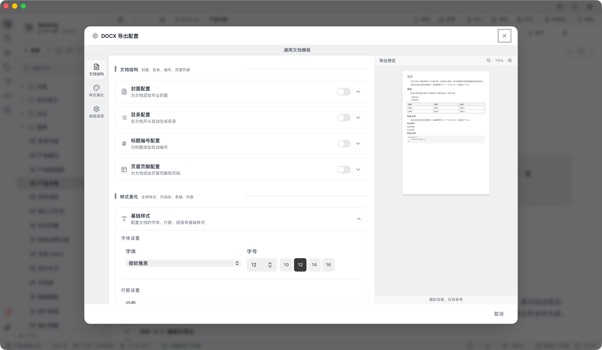
07主题
二十种心境，一种专注。
从素白纸到极客酷黑，20 套精调主题可随系统明暗自动切换；代码块主题、字体字号与界面密度，也都按你的习惯来。
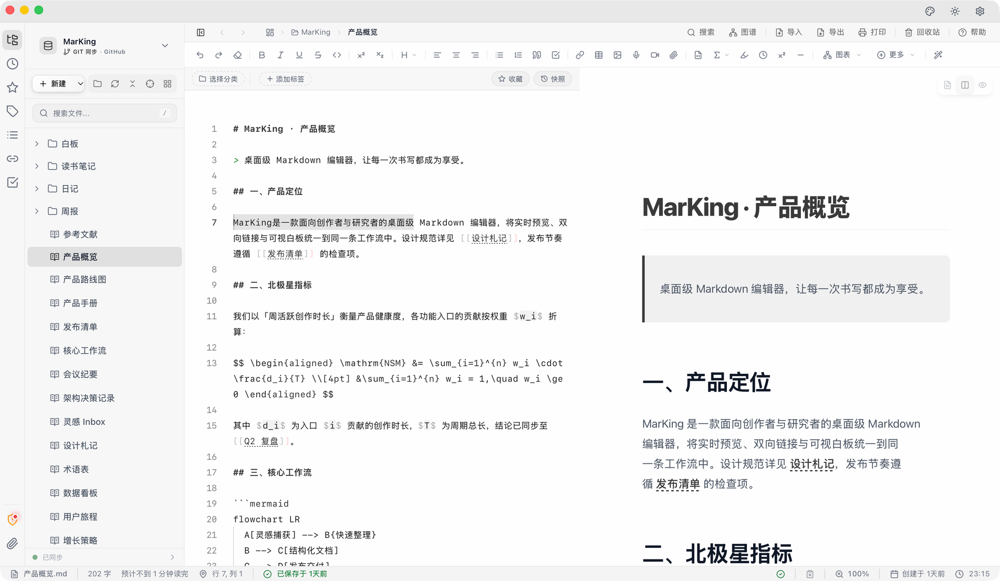
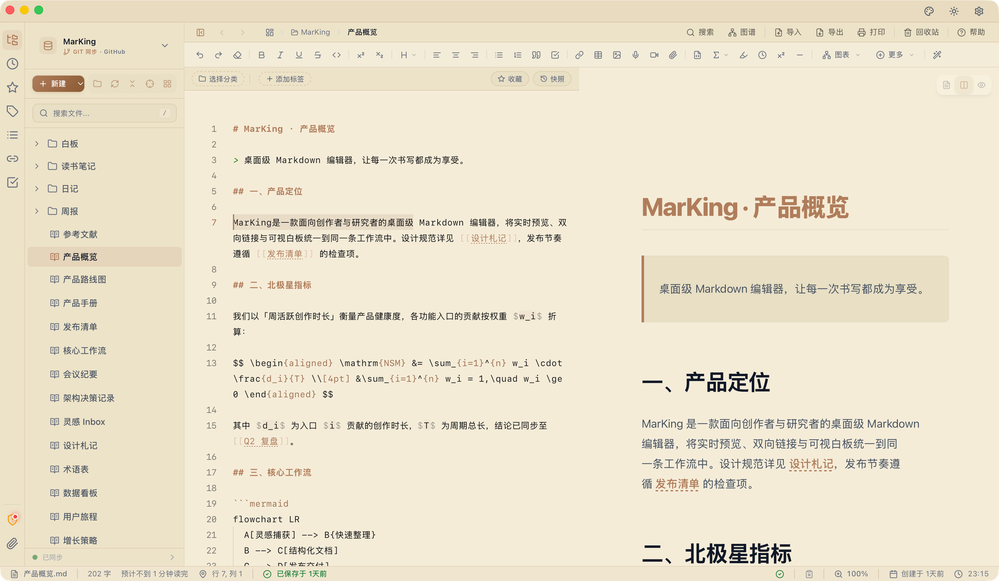
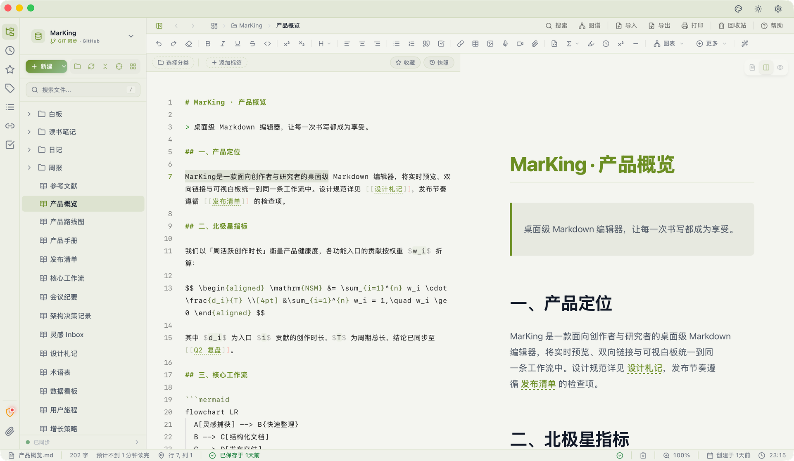
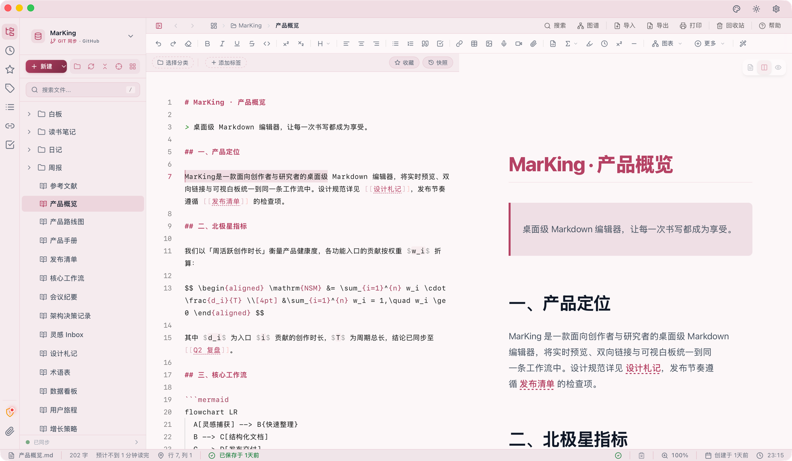
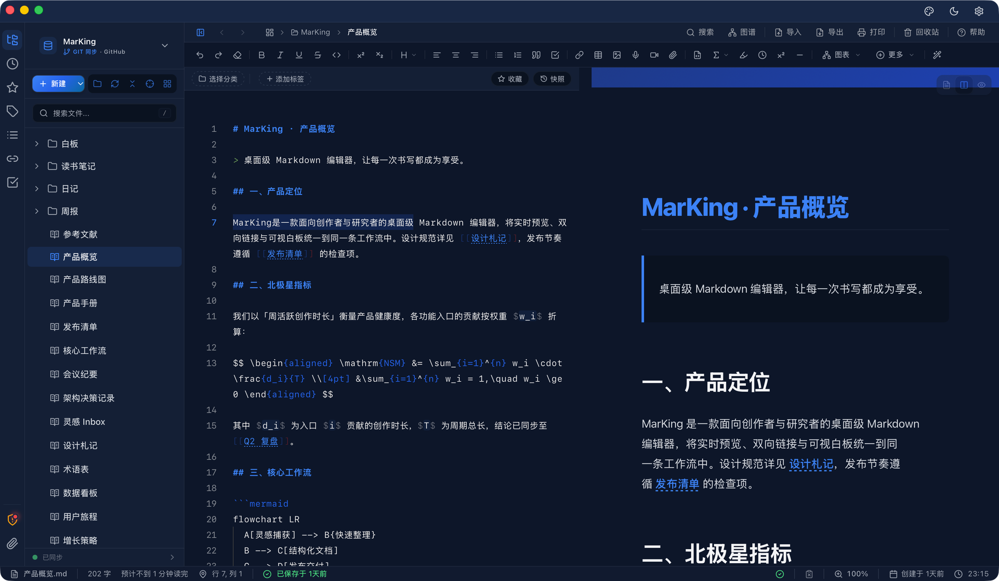
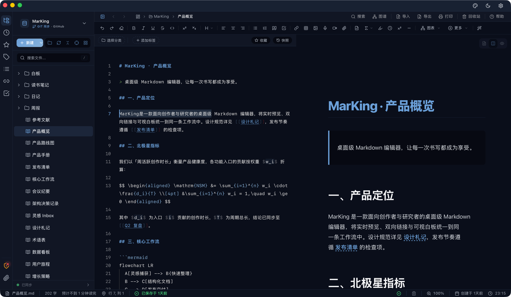
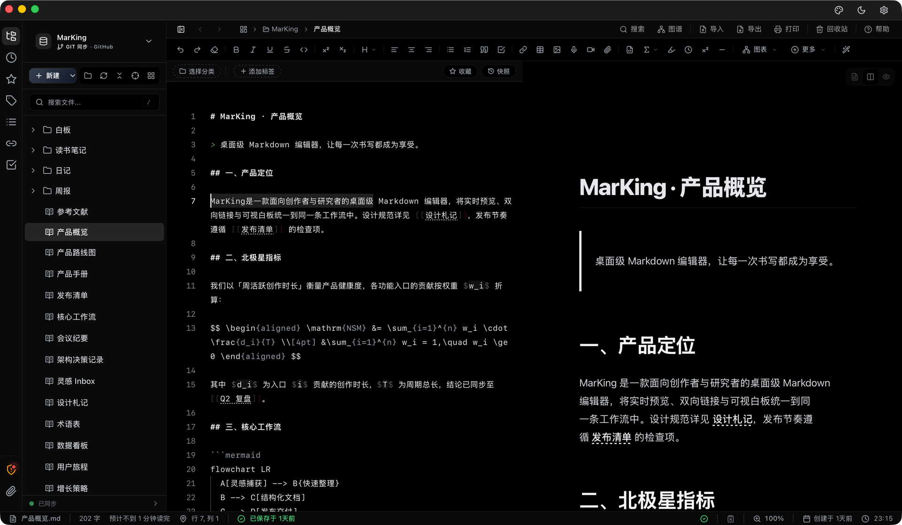
另有 12 套主题，以及 Dracula、Nord、Tokyo Night 等代码块配色，下载后即可体验。
下一篇，从这里开始。
MarKing v1.6.2 · 免费下载，原生支持 Windows、macOS 与 Linux。
Windows
Windows 10 及以上 · x64
EXE / MSI 安装程序
macOS
macOS 10.15 及以上
Apple 芯片与 Intel · DMG
Linux
主流发行版 · x64 / ARM64
AppImage / deb / rpm
支持 MarKing
支持 MarKing
MarKing 是一款独立软件：没有广告，不做追踪，每一个版本都因用户的支持而得以继续打磨。如果它让你的写作更顺手，欢迎请作者喝杯咖啡，或在 GitHub 上点亮一颗星。